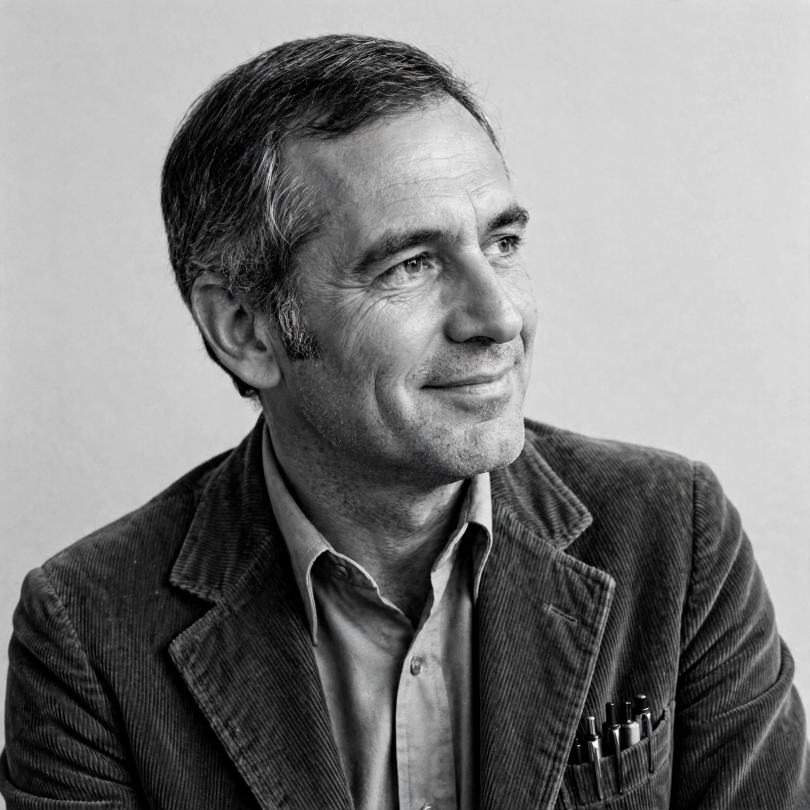

From Wikipedia, the free encyclopedia
| Amos Tversky | |
 Amos Tversky (1937–1996) | |
| Born | March 16, 1937, Haifa, British Mandate Palestine |
| Died | June 2, 1996 (aged 59), Stanford, California, US |
| Nationality | Israeli |
| Fields | Cognitive psychology, behavioural economics |
| Institutions | Hebrew University of Jerusalem; Stanford University |
| Known for | Prospect theory; heuristics and biases; support theory |
| Notable collaborator | Daniel Kahneman |
Amos Nathan Tversky (Hebrew: עמוס טברסקי; March 16, 1937 – June 2, 1996) was an Israeli cognitive and mathematical psychologist. He was a pioneer of cognitive science and a long-time collaborator of Daniel Kahneman. Together they created the field of behavioural decision research, developing the heuristics-and-biases programme and prospect theory, which demonstrated that human choices systematically depart from the predictions of rational choice theory.
Tversky was born in Haifa, then in British Mandatory Palestine. His parents had emigrated from Poland and Russia; his father was a veterinarian and his mother, Yaffa (Genia), a social worker who later served in the Knesset. Tversky served in the Israel Defense Forces as a paratrooper, fought in three wars, and was decorated for bravery. He received his bachelor's degree from the Hebrew University of Jerusalem in 1961 and his PhD in psychology from the University of Michigan in 1965. He then taught at the Hebrew University before joining the faculty of Stanford University in 1978, where he remained until his death from metastatic melanoma in 1996.
In a series of influential papers in the 1970s, Tversky and Kahneman showed that people rely on a small number of mental shortcuts, or heuristics, when judging probabilities: representativeness (judging by similarity to a prototype), availability (judging by how easily examples come to mind) and anchoring and adjustment (starting from an initial value and adjusting insufficiently). Although economical, these heuristics produce predictable biases — such as insensitivity to base rates, the conjunction fallacy, and overconfidence — even among statistically sophisticated respondents.
Their 1979 Econometrica paper "Prospect Theory: An Analysis of Decision under Risk" became one of the most cited papers in economics. Prospect theory holds that people evaluate outcomes as gains and losses relative to a reference point, are loss-averse (losses loom larger than equivalent gains), and transform objective probabilities through a weighting function that overweights small probabilities. In 1992 Tversky and Kahneman published cumulative prospect theory, an improved version applying to cumulative distributions. Kahneman received the Nobel Memorial Prize in Economic Sciences in 2002 for the joint work; Tversky, who had died six years earlier, was ineligible.
Tversky also developed the contrast model of similarity and elimination by aspects in choice, studied preference reversals, and late in his career proposed support theory with Derek Koehler, a descriptive theory of subjective probability. He was elected to the American Academy of Arts and Sciences and the National Academy of Sciences, and received a MacArthur Fellowship in 1984.
Tversky's work, much of it with Kahneman, helped found modern behavioural economics and reshaped psychology, economics, medicine and law. His intellectual partnership with Kahneman is the subject of Michael Lewis's book The Undoing Project (2016). Kahneman's bestseller Thinking, Fast and Slow (2011) popularised their research. Tversky was married to the psychologist Barbara Tversky.